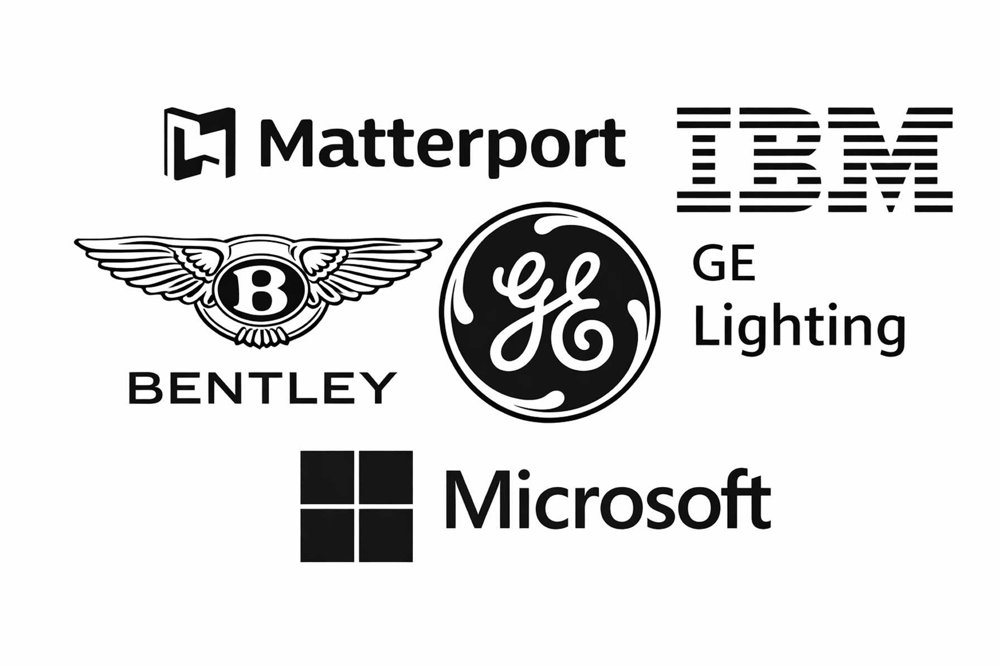
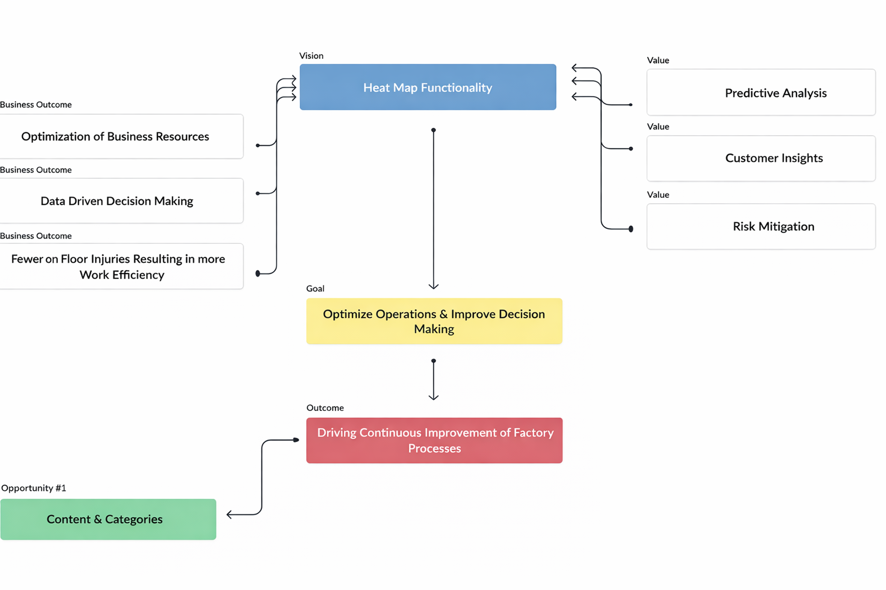
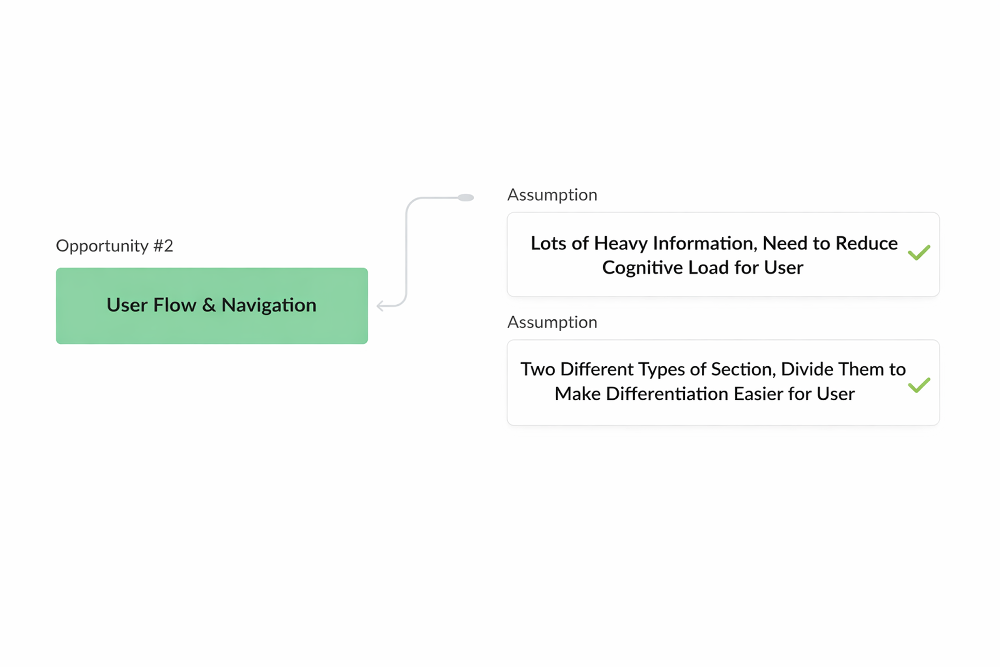
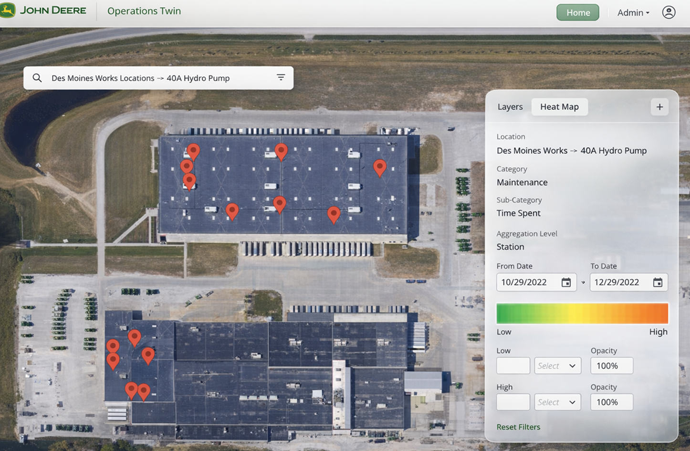
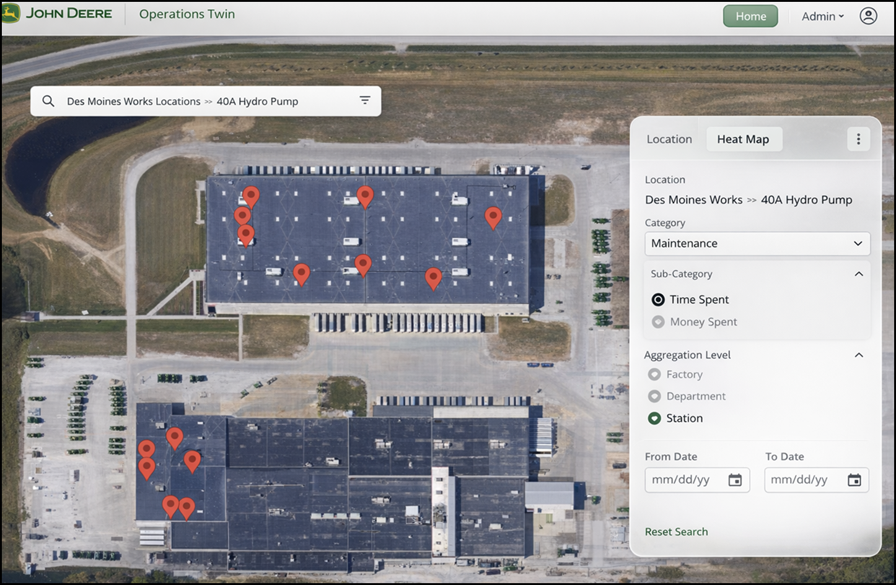
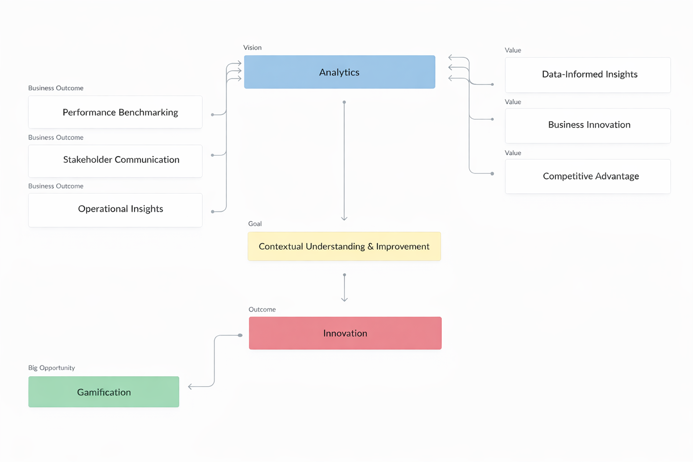
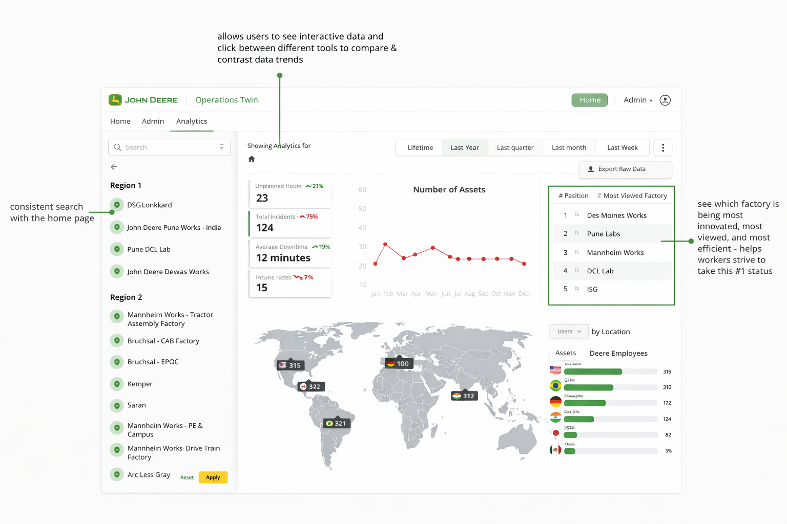

Data Was Abundant. Decisions Were Slow.
John Deere had invested heavily in telemetry and real-time factory data. The digital twin platform aggregated everything — downtime events, incident reports, asset tracking, operational metrics, and cross-factory analytics.
But operators weren't struggling with data access. They were struggling with: What should I do right now?
The platform optimized for data completeness — not decision clarity.
"This is the data that exists." — The system
What operators actually needed: "What action should I take?"
Operators had to:
- Interpret raw metrics manually
- Cross-reference multiple panels
- Infer severity without clear hierarchy
- Navigate static dashboards during time-sensitive moments
From Dashboard → To Decision System
Instead of asking "How do we display more data?" we reframed the problem: How do we change operator behavior at scale?
Reduce cognitive load during operational disruptions
Prioritize insight over information — enable faster action without increasing friction
Create competitive visibility across factories to drive behavioral change
This required rethinking:
Not just visual design.
The digital twin platform — aggregating telemetry, incidents, and analytics across global factory sites
Competitive Landscape & Operator Testing
I conducted a competitive analysis across digital twin platforms and enterprise monitoring systems to identify patterns, gaps, and opportunities.

Success factors
- IoT integration
- Predictive modeling
- Clear visualization tools
Common failures
- Data-heavy, action-light interfaces
- Poor cross-system integration
- Limited scalability
Key gap
- Competitive analysis alone wasn't enough — we needed to observe real operator behavior
Operator Testing
We ran moderated usability tests and first-click tests with real operator workflows. What we discovered changed the direction of the project.
Alerts lacked clear severity hierarchy
Analytics existed, but behavior didn't change
The interface was logically correct. But behaviorally ineffective.
After synthesizing findings, I led a prioritization workshop with Product and Engineering
1. Information Architecture Redesign
Rebuilt the dashboard hierarchy around operator tasks instead of system data categories
2. Severity-Based Alert System
Created severity-driven visual patterns and progressive disclosure logic
3. Action-Oriented Interaction Model
Integrated contextual actions directly into insight surfaces
4. Cross-Factory Benchmarking
Introduced competitive visibility across factory regions
We intentionally deprioritized: cosmetic enhancements and feature expansion without behavioral impact. The focus shifted to outcomes.
Heatmaps: From Visualization to Insight
The original heatmap provided location filters, category filters, date ranges, and a static legend. It answered: "Where did events occur?" but not: "Where should I focus?"
Outcome flow: Heat map functionality

Iteration 1 — Customization Depth

We added:
- Aggregation levels (factory / department / station)
- Severity segmentation
- Adjustable thresholds
- Opacity controls
This increased flexibility — but flexibility alone didn't drive clarity.

Severity & Prioritization Logic
We introduced:
- Hierarchical alert patterns
- Progressive disclosure
- Visual weighting by urgency
- Contextual actions embedded directly in insight panels
Now the system surfaced: what matters most, why it matters, and what to do next. The interface began guiding behavior.
Every major feature was mapped to a behavioral outcome
We reframed design questions as:
This moved the product from informational to operational.
Navigation Redesign → Reduced cognitive friction



Analytics → Competitive accountability

Heatmaps → Faster triage. Navigation redesign → Reduced cognitive friction. Analytics → Competitive accountability.
Gamification as Accountability
During early analytics testing, we observed something critical: factories had no visibility into each other's performance. Data was siloed by region.
We asked: What if visibility created motivation?
We introduced:
- "Most Viewed Factory" leaderboard
- Cross-region performance rankings
- Comparative metrics dashboards
This wasn't superficial gamification. It was strategic transparency.
Visibility → Accountability → Behavioral shift.
Factories began competing to improve uptime and reduce incidents.

From raw telemetry to operational intelligence
Before
- Raw telemetry dashboards
- Static data interpretation
- High cognitive load
- Limited cross-factory insight
After
- Prioritized insights
- Embedded contextual actions
- Clear severity hierarchy
- Competitive benchmarking
- Faster decision cycles
Time to critical insight
Increase in workflow completion
Feature adoption in first release cycle
The platform reached 100,000+ views in 6 months with increased cross-factory alignment. More importantly: operators reported faster resolution times and clearer operational priorities.
This was not a visual refresh. It was a systems redesign.
As Lead Product Designer, I:
Designing at enterprise scale requires a different lens
This project taught me:
- Translating telemetry into leverage
- Designing for decision-making, not completeness
- Balancing flexibility with clarity
- Aligning behavioral incentives with business goals
This project transformed a data platform into an operational decision engine — and it shifted my thinking from interface design to systems design.
The next evolution: a digital twin that doesn't just reflect operations — it anticipates them
The long-term vision includes:
- Predictive downtime modeling
- Anomaly detection across historical telemetry
- Proactive alert surfacing
- AI-assisted prioritization